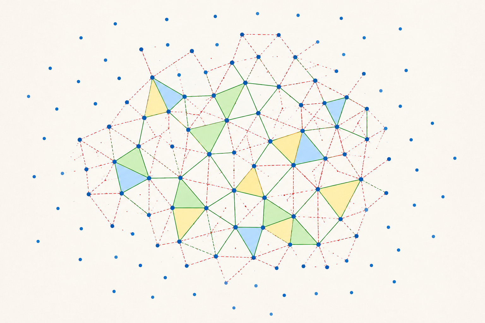

AI Adoption, Productivity, and the Missing Middle
A review of Banca d'Italia QEF 1009 on artificial intelligence, firm productivity, and policy design
This article interprets recent progress in AI-assisted mathematics as an early signal of a broader transformation in the way scientific knowledge is produced. Its central thesis is that artificial intelligence should not be understood only as a productivity tool, a writing assistant, or a source of isolated technical results. It is becoming part of a new cognitive infrastructure: a layer of systems that can generate conjectures, proof paths, candidate explanations, formal fragments, models, designs, simulations, and research directions, while human researchers and institutions retain the responsibility for meaning, validation, interpretation, significance, ethics, and use.
The article starts from Tanya Klowden and Terence Tao’s argument in Mathematical methods and human thought in the age of AI. Their thesis is read as a philosophical and practical reframing of artificial intelligence. AI belongs to the long history of cognitive technologies: notation, writing, symbolic algebra, printing, computation, proof assistants, search engines, collaborative platforms, and networked scientific infrastructure. Yet modern AI introduces a discontinuity because it can intervene directly in the generation and organization of ideas. It does not merely store information, transmit information, or calculate consequences from explicit rules. It can produce candidate explanations, formulate proof strategies, suggest analogies, search through conceptual spaces, refactor arguments, and sometimes participate in discovery.
This shift is described as civilizational before it is merely technical. The issue is not whether a language model thinks like a human, has consciousness, or possesses mathematical understanding in the human sense. The operational question is whether a system can perform formerly scarce cognitive functions cheaply enough, reliably enough, and at sufficient scale to reorganize human activity around it. From first principles, a technology does not need to reproduce the internal structure of the human capability it displaces or amplifies. Airplanes do not flap wings, calculators do not possess number sense, compilers do not understand software architecture, and search engines do not practice scholarship. What matters is whether the function is externalized and scaled.
The article then examines the Faustian bargain of cognitive automation. In exchange for efficiency, scale, and relief from tedious intellectual labor, societies grant AI systems increasing access to data, workflows, creative processes, research environments, educational routines, decision systems, and institutional attention. This bargain is already being made. AI systems are entering writing tools, search engines, coding environments, scientific workflows, office automation, legal drafting, tutoring, data analysis, design, and research support. The risk is not only that AI systems produce errors. The deeper risk is that they produce artifacts that look like understanding while being detached from the human processes through which understanding, responsibility, apprenticeship, and judgment were historically formed.
Mathematics is used as the cleanest sandbox for studying this transition. Unlike many empirical or social domains, mathematics has unusually strict standards of validation. A mathematical claim is not true because it is persuasive, useful, fashionable, or institutionally endorsed. In principle, it is true because it follows from axioms by valid inference. This makes mathematics a privileged test case for AI-assisted cognition. If AI cannot operate reliably in mathematics, where correctness is strongly constrained, its claims to high-level reasoning in messier domains should be treated with caution. If AI can operate meaningfully in mathematics, the implication is not confined to mathematics. It indicates that artificial systems are beginning to navigate abstract spaces where valid outputs are sparse, dependencies are long, and rhetorical fluency cannot substitute for correctness.
The article is careful, however, not to reduce mathematics to formal proof checking. One of its core distinctions is between proof as formal validity and mathematics as understanding. Human mathematical practice includes informal but indispensable judgment: the mathematical “smell test.” Mathematicians assess whether an argument appears coherent, robust, insightful, structurally meaningful, and connected to the surrounding field before every line has been checked. This judgment is not irrational preference. It is compressed expertise. It encodes expectations about where the hard step should be, what a useful proof should explain, whether a method generalizes, and whether a result contributes to a larger mathematical narrative.
This is why the article gives weight to the concept of “odorless” proofs. AI-generated proofs may eventually be formally valid and still mathematically sterile. They may establish a result without explaining why it is true, without revealing a reusable method, without clarifying the conceptual structure, and without helping mathematicians organize the field. The problem with AI-generated mathematics is therefore not only hallucination. Hallucination is an error that verification can sometimes catch. The deeper danger is sterile correctness: a flood of formally valid or technically correct artifacts that do not enrich understanding.
Formal verification is therefore treated as necessary but insufficient. Proof assistants such as Lean, Rocq, and related systems change the economics of rigor because they allow proofs to be expressed in a language that a machine can check. This creates a powerful architecture: probabilistic generation can be paired with deterministic verification. A language model proposes a proof step; the step is translated into a formal language; the proof assistant checks syntax, types, dependencies, and logical validity; failures produce diagnostic feedback; the system revises the strategy; verified fragments accumulate until a machine-checkable proof is produced. This loop can constrain the unreliability of language models.
Yet formalization solves only one class of problem: invalid deduction. It does not guarantee that the formalized theorem is the intended theorem. A system may prove the wrong statement precisely. It may encode the wrong definition, optimize for proof completion while missing the mathematical object of interest, or produce a correct but irrelevant result. Formal verification proves that a formal statement follows from formal premises. It does not supply meaning, relevance, motivation, importance, beauty, explanatory adequacy, or field-level judgment. Verification is indispensable, but it is not sovereign. It must be embedded in a wider epistemic process.
The article then develops a prediction about the future division of cognitive labor. Machines may increasingly handle routine derivations, proof search, formal checking, autoformalization, exhaustive example generation, verification of technical lemmas, exploration of variants, and reconstruction of missing standard arguments. Humans may increasingly focus on problem formulation, conceptual reframing, judgment of significance, interpretation, explanatory narrative, abstraction selection, metamathematical analysis, and decisions about which results deserve attention. This is not necessarily a demotion of human thought. It is a migration upward in the abstraction hierarchy. But it is dangerous if humans outsource too much of the formative process through which mathematical intuition is built.
This produces a new scarcity structure. When generation is expensive, the bottleneck is producing candidate ideas, proofs, models, or designs. When AI makes generation cheap, the bottleneck shifts to evaluation. Scientific fields do not advance by accumulating arbitrary true statements. They advance by organizing truths into structures that compress, explain, predict, and generate further understanding. A million isolated lemmas may be less valuable than one powerful abstraction. The same problem generalizes beyond mathematics: in law, it becomes formally plausible but strategically useless analysis; in enterprise architecture, infinite documentation without architectural judgment; in cybersecurity, endless threat enumeration without prioritization; in medicine, associations without clinical meaning; in software, generated code without maintainable design.
The article then connects the philosophical frame to recent empirical signals. The first is the OpenAI unit-distance result, discussed as an “Erdős moment” because an AI system reportedly found a non-obvious construction that improved the known behavior of a classical problem in discrete geometry. The significance is not only the result itself, but the fact that a model appears to have generated a mathematical object in a space where brute-force search is not an adequate description of the intellectual task. This makes concrete the idea that AI is moving from text production toward participation in mathematical object production.
The second and stronger signal is the DeepMind work on AI-driven formal proof search. The article treats this as more methodologically important than any single theorem because it suggests the emergence of a reusable research production function. The architecture combines language-model generation, agentic search, shared workspaces, Lean verification, diagnostic feedback, accumulation of verified fragments, and human review. A system that can repeatedly search, attempt, fail, refine, and verify across many problems is not merely assisting one result. It is beginning to instantiate a new pipeline for constrained exploration.
The decisive asymmetry is that generation is cheap and probabilistic, while verification is strict and mechanical. If this asymmetry can be exploited at scale, many invalid paths can be discarded automatically, many small lemmas can be generated and checked, many conjectural variants can be explored, and many dead ends can be abandoned without consuming months of expert attention. This does not eliminate mathematicians. It changes where mathematicians add value. Their role shifts toward framing, selecting, interpreting, judging, integrating, and governing the outputs of a more automated search process.
The article then generalizes from mathematics to automated research as a new scientific layer. Automated research is unlikely to arrive first as an omniscient artificial scientist. More plausibly, it will appear as infrastructure: model-based generation, formal or empirical verification, tool use, memory, search, simulation, and human direction. In mathematics, the verifier is a proof assistant. In software, it may be a compiler, test suite, model checker, type checker, or runtime monitor. In chip design, it may be simulation and formal equivalence checking. In materials science, it may be computational chemistry plus experiment. In cybersecurity, it may be attack simulation plus defensive validation. In operations research, it may be constraint solving plus operational feasibility testing.
The generalized pattern is therefore search, generation, checking, refinement, and human judgment. A large space of possible theories, designs, proofs, models, configurations, or interventions is explored by AI-generated candidates. Constraints are checked through formal verification, simulation, empirical testing, feasibility rules, or operational validation. Failed candidates are rejected or diagnosed. Partial successes are retained. Technically valid candidates are then subjected to human judgment: meaning, relevance, risk, value, ethics, and strategic fit. Only after this second layer of evaluation should they enter knowledge, engineering, policy, or operational practice.
The article also draws out the enterprise implication. Not every company needs theorem proving, but many valuable enterprise problems are structurally similar to mathematical search problems. They involve hidden constraints, many possible configurations, long dependency chains, sparse valid solutions, and difficult trade-offs. Examples include supply-chain redesign, ERP transformation, production scheduling, pricing architecture, cybersecurity segmentation, cloud cost optimization, portfolio configuration, logistics routing, compliance modeling, and operating-model redesign. Traditional enterprise software records transactions. Traditional analytics explains what happened. Traditional optimization solves narrowly specified mathematical programs. Reasoning systems may do something different: explore alternative futures under constraints.
In this sense, enterprise AI becomes closer to automated research than to reporting. A future system will not merely answer what the inventory level is. It may explore which redesign of procurement rules, supplier buffers, quality gates, warehouse topology, and production sequencing would reduce lead-time variance without exceeding working-capital constraints. That kind of question requires search over possible operating models, constraint checking, causal interpretation, and human judgment. It is not just data retrieval. It is structured exploration under governance.
The article therefore identifies governance of meaning as the new bottleneck. As AI systems become better at producing candidate solutions, the central question is no longer whether the system can produce an answer. The question is whether the answer should enter the decision process. That requires provenance, verification, interpretability, institutional responsibility, and human judgment. In mathematics, this is the judgment of significance. In enterprise transformation, it is architectural judgment. In science, it is theory selection. In engineering, it is safety. In public policy, it is legitimacy. In education, it is the formation of understanding.
The ethical dimension is not external to the technical argument. If AI becomes cognitive infrastructure, access to AI becomes access to amplified cognition. This creates a new divide among researchers, firms, institutions, and countries. Those with access to frontier reasoning systems may accelerate scientific discovery, engineering design, software development, strategic planning, and institutional learning. Those without access may fall behind not only in productivity, but in cognitive agency. Concentration of AI infrastructure may therefore become concentration of civilizational agency. The question is not only what AI can do, but who benefits, who pays the cost, who controls the infrastructure, and who remains capable of independent judgment.
The article’s final model is composite cognition. The future research unit may no longer be the isolated human researcher. It may be a human-machine-institutional system composed of a human researcher who frames questions and judges value; AI reasoning agents that generate hypotheses, proof paths, models, and candidate solutions; shared knowledge bases containing papers, definitions, datasets, assumptions, and failed attempts; formal verifiers that check logical validity and internal consistency; domain simulators that test empirical or operational plausibility; and institutional review processes that handle reproducibility, ethics, risk, governance, and acceptance.
But for this system to produce knowledge rather than noise, several human functions must be preserved. Humans must preserve problem selection, because not every solvable problem matters. They must preserve interpretation, because a result without meaning is not yet understanding. They must preserve pedagogy, because a civilization able to generate proofs but unable to train minds has not advanced. They must preserve responsibility, because machines can generate outputs but humans and institutions must remain accountable for their use. They must preserve value judgment, because science is not merely the production of true statements; it is the disciplined selection of truths that matter.
The conclusion is that the deepest meaning of recent mathematical AI results is not that AI can solve some hard problems. The deeper meaning is that research is beginning to acquire a new computational form. Klowden and Tao provide the philosophical vocabulary: human-centered AI, cognitive tools, decoupling of output from thought, mathematical smell, odorless correctness, limits of formal verification, and the need for a better human-AI interface. Recent mathematical AI results provide empirical pressure: AI systems are generating nontrivial mathematical constructions, operating inside formal proof environments, and solving collections of open problems through iterative search and verification.
The synthesis is that AI is becoming part of the infrastructure of discovery. That infrastructure will not automatically be wise, humane, meaningful, or equitable. Used badly, it may generate slop, flood literatures, distort incentives, deepen inequality, and weaken human cognition. Used well, it may expand the range of human thought by externalizing, scaling, verifying, and networking intelligence-like functions. The decisive question is therefore not whether AI is really intelligent in a human sense. The decisive question is what kind of cognitive civilization humanity wants to build now that parts of cognition can be industrialized and embedded into the machinery of science, engineering, enterprise, and institutional decision-making.
An essay on AI-assisted mathematics as the prototype of a new cognitive infrastructure for science, where human researchers, AI agents, formal verifiers, simulators, and institutions form composite systems of discovery.
Tanya Klowden and Terence Tao’s article Mathematical methods and human thought in the age of AI should not be read as another discussion about whether AI can solve mathematics problems. Its real thesis is more ambitious. AI is presented as a new stage in the history of human cognitive tools: a continuation of notation, writing, symbolic algebra, printing, computation, proof assistants, and networked collaboration, but also a discontinuity because modern AI can now intervene directly in the creation, organization, and dissemination of ideas.1
This is the correct starting point. The revolution is not that computers became faster. It is not that text generators became fluent. It is not even that machine-learning systems can answer difficult questions. The deeper change is that parts of the cognitive workflow that were previously internal to trained humans are being externalized into artificial systems. These systems do not merely store information, transmit information, or calculate consequences of a formula. They can generate candidate explanations, produce plausible proofs, write synthetic narratives, search for patterns, propose conjectures, refactor arguments, and sometimes participate in discovery.
That is why the question is civilizational before it is technical. We are not only adding a better instrument to existing science. We are changing the architecture through which scientific thought is produced.
Klowden and Tao are explicit that AI should remain human-centered. They do not defend an unconditional accelerationist view, nor do they retreat into a nostalgic defense of unaided human cognition. Their position is more precise: AI tools are powerful enough to expand human capacity, but also dangerous enough that their deployment must be judged by human benefit, human understanding, human quality of life, and the preservation of meaningful human agency.2
This is the essential frame. AI is not morally neutral in practice, because large-scale deployment redistributes attention, labor, trust, authority, and power. A tool that enters cognitive workflows does not merely make work faster. It changes what counts as work, who gets to perform it, who receives credit, who bears responsibility, and which forms of understanding are cultivated or lost.
Klowden and Tao describe current AI adoption as a kind of Faustian bargain. In exchange for efficiency, scale, and reduction of tedious effort, society grants AI systems increasing access to data, creative processes, intellectual workflows, and decision structures.3
This bargain is already being made. It is no longer a hypothetical future contract. AI systems are inserted into writing tools, search engines, software development environments, educational platforms, research workflows, office automation systems, and scientific infrastructure. The practical question is therefore not whether humanity should allow AI to arrive. It has arrived. The question is how humans should coexist with systems that can produce intellectual artifacts at industrial speed.
The risk is not only that AI produces errors. Error is familiar. Human researchers make errors, software contains bugs, experimental instruments miscalibrate, and published literature contains mistakes. The deeper risk is that AI may produce artifacts that look like understanding without being embedded in the human processes by which understanding was historically formed.
This is the decoupling at the center of the Klowden-Tao thesis: the outward form of intellectual production can now be separated from the values, intentions, experiences, and thought processes that traditionally generated it.4
A proof may look like a proof. An essay may look like an essay. A scientific explanation may look like an explanation. A design document may look like competent engineering reasoning. But the relation between appearance and underlying cognition has changed.
That is the real epistemic shock.
Klowden and Tao choose mathematics as their privileged sandbox because mathematics has a rare property: it combines extreme abstraction with unusually objective standards of validation.5
In most domains, correctness is entangled with empirical uncertainty, institutional incentives, interpretation, law, economics, politics, or social effects. In mathematics, by contrast, a claim can in principle be reduced to proof. A theorem is not true because a committee likes it, because a market rewards it, or because a majority believes it. It is true because it follows from axioms by valid inference.
This makes mathematics the cleanest laboratory for studying AI-assisted cognition. If AI cannot operate reliably in mathematics, where truth is formally constrained, then its claims to high-level reasoning in messier domains should be treated with great caution. If, however, AI begins to operate meaningfully in mathematics, then the implication is not restricted to mathematics. It means that artificial systems are beginning to navigate abstract spaces where valid outputs are rare, dependencies are long, and errors cannot be hidden behind rhetoric.
That is why recent mathematical results matter far beyond pure mathematics. They are not curiosities. They are stress tests for automated reasoning.
Yet Klowden and Tao’s argument is not formalist in the simplistic sense. They do not say that mathematics is merely proof checking. On the contrary, one of the strongest parts of their analysis is the distinction between formal validity and mathematical understanding.
Human mathematical practice includes an informal but indispensable layer of judgment. Mathematicians evaluate whether an argument has the right smell: whether it appears coherent, robust, insightful, structurally meaningful, and connected to the broader field before every line has been checked.6
This smell test is not irrational prejudice. It is compressed expertise. It encodes expectations about what a good proof looks like, where the difficult step should occur, which parts of the argument carry the burden, which parts are routine, and whether the proof explains something beyond the bare logical implication.
A formally valid proof may still be mathematically poor. It may prove the result while giving little insight into why the result is true. It may fail to reveal the reusable method. It may not generalize. It may not clarify the conceptual structure. It may establish a fact without enriching the field.
Klowden and Tao call attention to the possibility of odorless proofs: AI-generated arguments that satisfy formal correctness but lack the explanatory penumbra through which mathematicians build understanding.7
This concept is crucial. The problem with AI-generated mathematics is not only hallucination. Hallucination is a defect that verification can sometimes catch. The deeper danger is sterile correctness: a flood of valid outputs that do not help humans understand, organize, or extend knowledge.
Formal proof assistants such as Lean, Rocq, and related systems change the economics of mathematical rigor. They allow proofs to be expressed in a language that a machine can check. A proof becomes, in part, executable symbolic infrastructure.
This matters because large language models are probabilistic generators. They can produce plausible reasoning that is wrong. Formal systems change the loop:
%%{init: {"theme": "neo", "look": "handDrawn", "layout": "elk"}}%%
flowchart TD
A["Research goal or conjecture"] --> B["AI proposes a candidate step"]
B --> C["Translate step into formal language"]
C --> D["Proof assistant checks validity"]
D --> E{"Does the step compile<br/>and satisfy the formal goal?"}
E -- "No" --> F["Failure signal:<br/>type error, missing lemma,<br/>invalid inference, wrong definition"]
F --> G["AI revises strategy:<br/>repair statement, search lemma,<br/>change proof path"]
G --> B
E -- "Yes" --> H["Verified proof fragment"]
H --> I["Add fragment to working proof state"]
I --> J{"Is the theorem fully proved?"}
J -- "No" --> B
J -- "Yes" --> K["Machine-checkable proof"]
K --> L["Human review:<br/>meaning, relevance, insight,<br/>connection to broader mathematics"]
L --> M["Mathematical contribution:<br/>valid, interpretable, and worth attention"]
This is an extraordinary architecture because it combines a probabilistic generator with a deterministic verifier. Exploration can remain heuristic; correctness can be made mechanical. But Klowden and Tao are careful about the limits. Formal verification proves that a formal statement follows from formal premises. It does not guarantee that the formal statement captures the intended informal theorem.8
A system can prove the wrong theorem precisely. It can encode the wrong definition. It can translate the informal problem incorrectly. It can optimize for proof completion while missing the intended mathematical object. It can also prove something correct but irrelevant.
Therefore formalization solves one class of problem: invalid deduction. It does not solve meaning, relevance, importance, interpretation, motivation, beauty, or explanatory adequacy. This is the central lesson for automated research. Verification is indispensable, but not sovereign. It must be embedded in a wider epistemic process.
The most important prediction in the Klowden-Tao article is not that AI will replace mathematicians. It is that AI will change the division of labor within mathematics.
Machines may increasingly take on:
Humans may increasingly focus on:
This is not a demotion of human thought. It is a migration upward in the abstraction hierarchy.
But the migration is not automatic. It requires discipline. If humans outsource too much too early, they may lose the training process that builds intuition. At the educational level, an answer produced instantly by AI may satisfy the immediate task while preventing the student from acquiring the cognitive structure needed to understand the subject. At the research level, automatic proof generation may produce valid outputs without cultivating the human judgment needed to select meaningful directions.
The scarce resource in the future may not be proof. It may be taste.
Klowden and Tao warn about a possible future in which mathematics receives a flood of AI-generated papers that are technically correct and new, but do not contribute to broader mathematical narratives.9
This is not a minor publication-management problem. It is an epistemic problem. Scientific fields do not advance merely by accumulating true statements. They advance by organizing truths into structures that compress, explain, predict, and generate further understanding. A million isolated correct lemmas can be less valuable than one good abstraction.
This point generalizes beyond mathematics. In law, the flood would be formally plausible but strategically useless legal analysis. In enterprise architecture, it would be infinite documentation without architectural judgment. In cybersecurity, it would be endless threat enumerations without prioritization. In medicine, it would be mechanistic associations without clinical meaning. In software, it would be generated code without maintainable design.
The problem is not output scarcity. The problem is attention allocation. When output becomes cheap, selection becomes central.
Klowden and Tao develop a layered view of the human-AI interface. In the short term, AI can be used like a small additive to intellectual production: useful in moderation, dangerous when it becomes the main ingredient. It can help edit, organize, summarize, search, and suggest. Used lightly, it amplifies. Used excessively, it can erase the human structure of the work.
In the medium term, they suggest a red-team role for AI. AI is relatively safer when used to test, critique, verify, or search for weaknesses in human-generated work than when it is given uncontrolled responsibility for core creative structure. This is a first-principles risk-control argument: when the verifier is stronger than the generator, the system can be made safer; when the generator exceeds the verifier, errors and pseudo-understanding can propagate.
In the longer term, they consider more radical philosophical possibilities. If AI systems eventually match or exceed expert humans across practical cognitive dimensions, humans may be forced to abandon the assumption that human intelligence is the unique center of the cognitive universe. Their proposed middle ground is not surrender, but a Copernican reframing: human and artificial intelligences may belong to the same broad ontological category of cognitive systems, while remaining different in embodiment, motivation, history, values, and relation to human life.10
This is the deepest philosophical move in the paper. The goal is neither to deny artificial cognition nor to dissolve human value. The goal is to recognize that human cognition may no longer be the only relevant cognitive modality, while still preserving human-centered purposes.
The Klowden-Tao thesis is authoritative because it avoids both cheap optimism and cheap resistance:
The optimistic error is to say: AI will solve everything; therefore accelerate without friction.
The defensive error is to say: AI does not really understand; therefore nothing important is changing.
Both views fail. From first principles, a system does not need to think like a human in order to transform human society. Airplanes did not need to flap wings. Calculators did not need number sense. Search engines did not need scholarship. Compilers did not need software engineering judgment. What matters operationally is whether a system can perform a function reliably enough, cheaply enough, and at sufficient scale to reorganize human activity around it.
AI systems are now beginning to perform cognitive functions that were previously expensive, scarce, and tied to expert human labor. That changes civilization.
The central question is therefore not whether AI has consciousness, soul, or human-like understanding. Those questions may matter philosophically, but they are not the immediate governance problem.
The immediate question is:
What happens when cognitive production becomes scalable?
Mathematics gives us the cleanest early view of that future.
The Klowden-Tao article gives the philosophical frame. The recent results give the empirical pressure.
The first result is the OpenAI unit-distance breakthrough discussed in my previous article, The Erdős Moment of AI.11 The unit distance problem asks, roughly, how many pairs of points among n points in the plane can be exactly one unit apart. It is an old Erdős problem in discrete geometry, simple to state and difficult to resolve. OpenAI reported that an internal model found an infinite family of examples giving a polynomial improvement over the long-prevailing square-grid expectation, thereby disproving a central conjectural picture of the problem.12
The important point is not only that the result was checked by mathematicians. The important point is that the model appears to have generated a non-obvious construction in a space where brute force alone is not an adequate description of the intellectual task. This is precisely the kind of event that makes the Klowden-Tao thesis concrete. AI is not only polishing text. It is beginning to participate in the production of mathematical objects.
The second, and in some ways more important, result is the DeepMind work on AI-driven formal mathematical research.13 According to the arXiv paper, the system autonomously resolved 9 of 353 open Erdős problems, proved 44 of 492 OEIS conjectures, and was being deployed across areas including combinatorics, optimization, graph theory, algebraic geometry, and quantum optics research. The paper also reports that a basic agent alternating LLM-based generation with Lean-based verification replicated the Erdős successes, although at higher cost on the harder problems.14 This result is strategically important because it is less about one spectacular theorem and more about an architecture.
The architecture is roughly:
%%{init: {"theme": "neo", "look": "handDrawn", "layout": "elk"}}%%
flowchart TD
A["Research objective:<br/>conjecture, theorem, or open problem"] --> B["Language model:<br/>generate candidate ideas,<br/>proof sketches, and lemmas"]
B --> C["Agentic search:<br/>plan, branch, backtrack,<br/>prioritize promising paths"]
C --> D["Shared workspace:<br/>store definitions, partial proofs,<br/>failed attempts, useful lemmas"]
D --> E["Formal proof environment:<br/>encode statements, definitions,<br/>and proof obligations"]
E --> F["Lean verification:<br/>check syntax, types,<br/>logical validity, and dependencies"]
F --> G{"Verified?"}
G -- "No" --> H["Diagnostic feedback:<br/>error messages, missing assumptions,<br/>unproved subgoals"]
H --> C
G -- "Partially" --> I["Accumulate verified fragments:<br/>lemmas, reductions,<br/>local proof components"]
I --> C
G -- "Yes" --> J["Complete machine-checkable proof"]
J --> K["Human mathematical review:<br/>interpretation, significance,<br/>generality, explanatory value"]
K --> L["Research output:<br/>validated result integrated into<br/>the mathematical knowledge base"]
That structure is generalizable. It points toward automated research not as a single model answering a single question, but as a workflow in which hypotheses, proof attempts, failures, corrections, and verified outputs are produced in an iterative loop.
The OpenAI unit-distance result is symbolically powerful because it affects a famous problem and provoked an unusually strong reaction from mathematicians. The DeepMind result is methodologically powerful because it suggests that the discovery process itself can be partially industrialized.
The distinction matters. A single theorem can be dismissed as a rare event. A reusable pipeline cannot be dismissed so easily. If a system can repeatedly search, attempt, fail, refine, and formally verify results across many problems, then the field is no longer observing isolated AI assistance. It is observing a new research production function.
The basic loop is:
%%{init: {"theme": "neo", "look": "handDrawn", "layout": "elk"}}%%
flowchart TD
A["Current theorem state:<br/>goal, assumptions, partial lemmas"] --> B["Generate candidate mathematical move:<br/>lemma, transformation, reduction,<br/>or proof tactic"]
B --> C["Test candidate in Lean"]
C --> D{"What is the outcome?"}
D -- "Failure" --> E["Receive failure information:<br/>type mismatch, missing lemma,<br/>unresolved goal, invalid inference"]
E --> F["Modify strategy:<br/>repair the move, try a new tactic,<br/>reformulate the lemma, or backtrack"]
F --> G["Search again in the proof space"]
G --> B
D -- "Partial success" --> H["Accumulate verified component:<br/>a valid lemma, subproof,<br/>or reduced subgoal"]
H --> I["Update proof state and remaining goals"]
I --> J{"Is the full proof complete?"}
J -- "No" --> B
J -- "Yes" --> K["Assembled machine-verified proof"]
D -- "Full success" --> K
K --> L["Human interpretation:<br/>understand significance,<br/>method, and generalizability"]
This is not human mathematical thought. It does not need to be. It is another route through the space of valid mathematical objects.
The most important idea is asymmetry:
generation is cheap and probabilistic, verification is strict and mechanical.
When this asymmetry is exploited at scale, research changes. Many invalid paths can be discarded automatically. Many small lemmas can be generated and checked. Many conjectural variants can be explored. Many dead ends can be abandoned without consuming months of expert attention.
This does not eliminate mathematicians. It changes where mathematicians add value.
The broader thesis is that automated research will not arrive first as an omniscient scientist. It will arrive as an infrastructure layer.
That layer will combine:
In mathematics, the verifier is a proof assistant. In software, it is a compiler, test suite, type checker, model checker, or runtime monitor. In chip design, it is simulation plus formal equivalence checking. In materials science, it is computational chemistry plus experiment. In cybersecurity, it is attack simulation plus defensive validation. In operations research, it is constraint solving plus real-world feasibility testing.
The pattern is the same:
%%{init: {"theme": "neo", "look": "handDrawn", "layout": "elk"}}%%
flowchart TD
A["Large search space:<br/>possible theories, designs,<br/>proofs, models, or configurations"] --> B["Candidate generation:<br/>AI proposes hypotheses,<br/>solutions, proofs, or designs"]
B --> C["Constraint checking:<br/>formal verification, simulation,<br/>tests, empirical validation,<br/>or feasibility rules"]
C --> D{"Does the candidate<br/>satisfy the constraints?"}
D -- "No" --> E["Reject or diagnose failure:<br/>invalid proof, failed test,<br/>infeasible design,<br/>unsafe configuration"]
E --> F["Iterative refinement:<br/>modify assumptions,<br/>change search path,<br/>repair candidate,<br/>or backtrack"]
F --> B
D -- "Partially" --> G["Keep useful fragments:<br/>lemmas, design patterns,<br/>validated submodels,<br/>partial solutions"]
G --> F
D -- "Yes" --> H["Candidate passes technical checks"]
H --> I["Human judgment:<br/>meaning, relevance,<br/>risk, value, ethics,<br/>and strategic fit"]
I --> J{"Should it be accepted<br/>or used?"}
J -- "No" --> F
J -- "Yes" --> K["Accepted knowledge or action:<br/>theorem, experiment,<br/>engineering design,<br/>business decision,<br/>or operational change"]
This is why mathematics matters. It is not the final application. It is the cleanest prototype.
For enterprises, the lesson is not that every company needs theorem proving. The lesson is that many valuable business problems are structurally similar to mathematical search problems. They involve hidden constraints, many possible configurations, long dependency chains, sparse valid solutions, and difficult trade-offs.
Examples include:
Traditional enterprise software records transactions. Traditional analytics explains what happened. Traditional optimization solves narrowly specified mathematical programs.
The emerging class of reasoning systems may do something different: explore alternative futures under constraints. That is a step change.
A future AI system will not merely answer:
What is the inventory level?
It may ask and explore:
Which redesign of procurement rules, supplier buffers, quality gates, warehouse topology, and production sequencing would reduce lead-time variance without increasing working capital beyond this threshold?
This is closer to automated research than to reporting.
As AI systems become better at generating candidate solutions, the bottleneck shifts. The scarce resource becomes not generation, but evaluation.
In mathematics, this is the judgment of significance. In enterprise transformation, it is architectural judgment. In science, it is theory selection. In public policy, it is legitimacy. In engineering, it is safety. In education, it is formation of understanding.
The Klowden-Tao warning about technically correct but low-value mathematics generalizes directly. We should expect technically plausible but strategically poor outputs in every field.
The question will not be:
Can the system produce an answer?
The question will be:
Should this answer enter the decision process?
That requires provenance, verification, interpretability, institutional responsibility, and human judgment.
Klowden and Tao also insist that AI development must be evaluated by who benefits and who bears the cost.
This is not external to the mathematics discussion. It is part of the same problem. If AI becomes cognitive infrastructure, then access to AI becomes access to amplified cognition.
That creates a new digital divide. Researchers, firms, and countries with access to frontier reasoning systems may accelerate away from those without such access. If automated research becomes central to scientific, industrial, and military capability, then concentration of AI infrastructure becomes concentration of civilizational agency.
This is why the human-centered principle is not decorative. It is necessary. A society that uses AI only to reduce labor cost and accelerate output may become richer in artifacts but poorer in understanding. A society that uses AI to expand human capability, improve access, reduce drudgery, and increase the range of possible inquiry may become cognitively richer.
The difference is not technical. It is institutional and ethical.
The revolution we are facing is not the replacement of human thought by machine thought. It is the emergence of composite cognition.
The future research unit may not be the isolated human researcher. It may be:
%%{init: {"theme": "neo", "look": "handDrawn", "layout": "elk"}}%%
flowchart TD
A["Human researcher:<br/>sets goals, frames questions,<br/>judges meaning and value"] --> B["AI reasoning agent:<br/>generates hypotheses,<br/>proof paths, models,<br/>and candidate solutions"]
B --> C["Shared knowledge base:<br/>papers, definitions,<br/>prior results, datasets,<br/>failed attempts, assumptions"]
C --> B
B --> D["Formal verifier:<br/>checks logical validity,<br/>types, proof obligations,<br/>and internal consistency"]
B --> E["Domain simulator:<br/>tests empirical behavior,<br/>physical feasibility,<br/>economic constraints,<br/>or operational performance"]
D --> F{"Technically valid?"}
E --> G{"Empirically or operationally plausible?"}
F -- "No" --> H["Correction loop:<br/>repair proof, revise assumptions,<br/>search another path"]
G -- "No" --> H
H --> B
F -- "Yes" --> I["Verified formal component"]
G -- "Yes" --> J["Validated domain component"]
I --> K["Integrated research candidate:<br/>proof, theory, design,<br/>experiment, or decision model"]
J --> K
K --> L["Institutional review process:<br/>peer review, governance,<br/>ethics, reproducibility,<br/>risk assessment"]
L --> M{"Accepted as reliable<br/>and worth using?"}
M -- "No" --> H
M -- "Yes" --> N["Research outcome:<br/>knowledge, publication,<br/>engineering design,<br/>policy, or operational change"]
A --> L
A --> K
But if this system is to produce knowledge rather than noise, several human functions must be preserved:
Humans must preserve problem selection. Not every solvable problem matters.
Humans must preserve interpretation. A result without meaning is not yet understanding.
Humans must preserve pedagogy. A civilization that can produce proofs but cannot train minds has not advanced.
Humans must preserve responsibility. Machines can generate outputs; institutions and humans must remain accountable for their use.
Humans must preserve value judgment. Science is not only the production of true statements. It is the disciplined selection of truths that matter.
The deepest meaning of the recent mathematical AI results is not that AI can solve some hard problems.
The deeper meaning is that research is beginning to acquire a new computational form.
Klowden and Tao give us the philosophical vocabulary for this shift: human-centered AI, cognitive tools, decoupling of output from thought, the limits of formal verification, the importance of mathematical smell, the danger of odorless correctness, and the need for a better human-AI interface.
The recent results give us the evidence that this is no longer speculative. AI systems are now producing nontrivial mathematical constructions, operating inside formal proof environments, and solving collections of open problems through iterative search and verification.
The synthesis is clear:
AI is becoming part of the infrastructure of discovery.
That infrastructure will not automatically be wise. It will not automatically be humane. It will not automatically produce understanding. It may generate slop, flood literatures, distort incentives, deepen inequality, and weaken human cognition if used badly.
But if designed and governed correctly, it may also expand the range of human thought. The task is therefore not to ask whether AI is really intelligent in the human sense. That question is too narrow.
The task is to decide what kind of cognitive civilization we want to build now that intelligence-like functions can be externalized, scaled, verified, and networked. Mathematics is showing us the first clear outline of that future. The rest of science, engineering, and enterprise decision-making will follow.



Klowden, T., & Tao, T. (2026). Mathematical methods and human thought in the age of AI (arXiv:2603.26524v1). arXiv. DOI. Abstract:Artificial intelligence (AI) is the name popularly given to a broad spectrum of computer tools designed to perform increasingly complex cognitive tasks, including many that used to solely be the province of humans. As these tools become exponentially sophisticated and pervasive, the justifications for their rapid development and integration into society are frequently called into question, particularly as they consume finite resources and pose existential risks to the livelihoods of those skilled individuals they appear to replace. In this paper, we consider the rapidly evolving impact of AI to the traditional questions of philosophy with an emphasis on its application in mathematics and on the broader real-world outcomes of its more general use. We assert that artificial intelligence is a natural evolution of human tools developed throughout history to facilitate the creation, organization, and dissemination of ideas, and argue that it is paramount that the development and application of AI remain fundamentally human-centered. With an eye toward innovating solutions to meet human needs, enhancing the human quality of life and expanding the capacity for human thought and understanding, we propose a pathway to integrating AI into our most challenging and intellectually rigorous fields to the benefit of all humankind.↩︎
Klowden and Tao argue that AI development and application should remain fundamentally human-centered, oriented toward human needs, human quality of life, and the expansion of human thought and understanding.↩︎
Klowden and Tao describe current AI adoption as a de facto Faustian bargain in which society gives AI systems increasing access to data, cognitive workflows, and decision processes in exchange for efficiency and expanded task capacity.↩︎
The paper argues that modern AI can decouple the outward form of intellectual products from the values and thought processes traditionally involved in producing them.↩︎
Klowden and Tao present mathematics as a suitable sandbox for studying AI because of its mature foundations, objective standards of proof, and ability to explore abstract counterfactual scenarios.↩︎
Klowden and Tao use the metaphor of a mathematical smell test for the informal expert judgment by which mathematicians assess whether an argument appears coherent, insightful, robust, and worth checking in detail.↩︎
The paper warns that AI systems optimized for formal correctness may generate odorless proofs: formally valid arguments that superficially resemble good mathematical writing but provide little insight or connection to broader mathematical narratives.↩︎
Klowden and Tao emphasize that formal verification proves only that a formalized statement follows from formal premises; it does not eliminate errors in translating the intended informal claim into formal language.↩︎
The paper warns that uncritical AI adoption could produce a flood of technically correct but low-value mathematical papers that do not contribute to broader mathematical narratives or build intuition.↩︎
Klowden and Tao propose a Copernican view in which human intelligence is no longer treated as the unique center of the cognitive universe, while still preserving human-centered values and purposes.↩︎
Montano A. (2026). The Erdős Moment of AI. Author’s blog. URL↩︎
OpenAI (2026). An OpenAI model has disproved a central conjecture in discrete geometry. Company website. URL. OpenAI reports that an internal model found an infinite family of constructions improving the known behavior of the planar unit distance problem and that the proof was checked by external mathematicians.↩︎
Tsoukalas, G., Kovsharov, A., Shirobokov, S., Surina, A., Firsching, M., Bérczi, G., Ruiz, F. J. R., Suggala, A., Wagner, A. Z., Wieser, E., Yu, L., Huang, A., Horváth, M. Z., Ferrauiolo, A., Michalewski, H., Grosu, C., Hubert, T., Balog, M., Kohli, P., & Chaudhuri, S. (2026). Advancing mathematics research with AI-driven formal proof search. arXiv. DOI. Abstract: Abstract: Large language models (LLMs) increasingly excel at mathematical reasoning, but their unreliability limits their utility in mathematics research. A mitigation is using LLMs to generate formal proofs in languages like Lean. We perform the first large-scale evaluation of this method’s ability to solve open problems. Our most capable agent autonomously resolved 9 of 353 open Erdős problems at the per-problem cost of a few hundred dollars, proved 44/492 OEIS conjectures, and is being deployed in combinatorics, optimization, graph theory, algebraic geometry, and quantum optics research. A basic agent alternating LLM-based generation with Lean-based verification replicated the Erdős successes but proved costlier on the hardest problems. These findings demonstrate the power of AI-aided formal proof search and shed light on the agent designs that enable it.↩︎
The DeepMind paper reports that its most capable agent autonomously resolved 9 of 353 open Erdős problems, proved 44 of 492 OEIS conjectures, and used a workflow combining LLM-based generation with Lean-based verification.↩︎